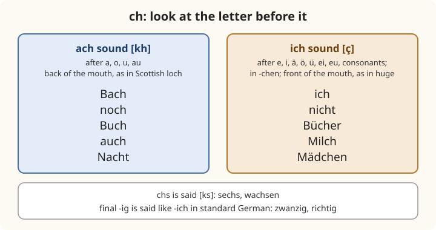

Lesson 1: Sounds, Letters and Spelling¶
Laute, Buchstaben und Rechtschreibung
German has a reputation for being hard to pronounce, but it is one of the most regular languages in Europe to read aloud. The same letters almost always stand for the same sounds, and the rules fit on a few pages. Most German sounds also exist in English; only three, the vowels written ü and ö and the sound written ch, need real practice. In this lesson you learn the alphabet, the vowels and the umlauts, the consonants that differ from English, the letter ß, the two sounds of ch, where the stress falls in a word, and why German writes every noun with a capital letter. With these rules you can read any word in this book aloud, even before you know what it means.
Learning outcomes
By the end of this lesson you will be able to:
- say the German alphabet and spell your name and address aloud;
- pronounce the long and short vowels, the umlauts ä, ö, ü and the combinations ei, ie, eu, au;
- pronounce the consonants that differ from English, including w, v, z, j, s, sch, sp and st;
- choose between the two sounds of ch and write ß and ss correctly;
- place the stress in most German words, and read the sound guides used in this book;
- use a few classroom phrases such as Wie bitte? and Wie schreibt man das?
1.1 Dialogue: at the language school¶
Emma has just arrived in Leipzig for a German course. At the office of the language school, Frau Schulz writes down her details.
- Frau Schulz: Guten Tag! Wie heißen Sie? — Good afternoon! What is your name?
- Emma: Guten Tag! Ich heiße Emma Clarke. — Good afternoon! My name is Emma Clarke.
- Frau Schulz: Wie bitte? Wie schreibt man das? — Sorry? How do you spell that?
- Emma: Clarke: C – L – A – R – K – E. — Clarke: C, L, A, R, K, E.
- Frau Schulz: Danke. Und Ihre Adresse in Leipzig? — Thank you. And your address in Leipzig?
- Emma: Goethestraße zwölf. — Goethestraße twelve.
- Frau Schulz: Goethestraße mit ö und mit ß? — Goethestraße with ö and with ß?
- Emma: Nein, Goethe mit o und e. Aber Straße mit ß, ja. — No, Goethe with o and e. But Straße with ß, yes.
- Frau Schulz: Gut. Und Ihre Telefonnummer? — Good. And your phone number?
- Emma: Langsam, bitte. Noch einmal? — Slowly, please. Once more?
- Frau Schulz: Ihre Telefonnummer, bitte. — Your phone number, please.
- Emma: Ah, ich verstehe. Moment, bitte … — Ah, I understand. One moment, please …
Notice:
- heißen and Straße are written with ß, a letter that English does not have. It is a sharp s sound, as in English hiss.
- The name of the poet Goethe is written with oe, an old spelling of ö: it is said with the ö sound you will learn in section 1.3.
- Every noun has a capital letter: Adresse, Straße, Telefonnummer, Moment. So does the polite word for "you", Sie, and the polite "your", Ihre.
- Wie bitte? [vee BIT-tuh] is the polite way to say "Sorry? Pardon?" when you have not understood. You will need it often.
1.2 Vocabulary: the alphabet and classroom phrases¶
The alphabet¶
German uses the 26 letters of the English alphabet, plus the three umlaut letters ä, ö, ü and the letter ß. The names of the letters are short and regular; many of them are simply the sound of the letter followed by a vowel.
| Letter | Name | Letter | Name | Letter | Name |
|---|---|---|---|---|---|
| A a | ah | J j | yot | S s | ess |
| B b | bay | K k | kah | T t | tay |
| C c | tsay | L l | ell | U u | oo |
| D d | day | M m | emm | V v | fow |
| E e | ay | N n | enn | W w | vay |
| F f | eff | O o | oh | X x | iks |
| G g | gay | P p | pay | Y y | ÜP-see-lon |
| H h | hah | Q q | koo | Z z | tset |
| I i | ee | R r | err | ß | ess-TSET |
Table 1.1. The German alphabet. The umlauts are named by their sound: ä [ai], ö, ü (section 1.3). Switch on Practice to test yourself.
Watch out for the letters whose German names sound like different English letters: German E [ay] sounds like English A; German I [ee] sounds like English E; German A [ah] sounds like English R in British speech; and German J [yot], V [fow], W [vay] and Z [tset] are completely different from their English names. When you spell an e-mail address, the sign @ is at, as in English, or Klammeraffe, and the dot is Punkt.
Classroom phrases¶
| German | Sounds like | English |
|---|---|---|
| Wie bitte? | [vee BIT-tuh] | Sorry? Pardon? |
| Noch einmal, bitte. | [nokh EYEN-mahl BIT-tuh] | Once more, please. |
| Langsam, bitte. | [LAHNG-zahm BIT-tuh] | Slowly, please. |
| Ich verstehe. | [iç fer-SHTAY-uh] | I understand. |
| Ich verstehe nicht. | [iç fer-SHTAY-uh niçt] | I don't understand. |
| Wie schreibt man das? | [vee SHRYPT mahn dahs] | How do you spell that? (how writes one that?) |
| Buchstabieren Sie, bitte. | [bookh-shtah-BEE-ren zee BIT-tuh] | Spell it, please. |
| Was bedeutet das? | [vahs buh-DOY-tet dahs] | What does that mean? |
| Wie sagt man das auf Deutsch? | [vee ZAHKT mahn dahs owf DOYCH] | How do you say that in German? |
| Ich weiß nicht. | [iç VICE niçt] | I don't know. |
| Ich habe eine Frage. | [iç HAH-buh EYE-nuh FRAH-guh] | I have a question. |
| bitte | [BIT-tuh] | please; also "here you are" and "you're welcome" |
| danke | [DAHN-kuh] | thank you, thanks |
| ja / nein | [yah] / [nine] | yes / no |
Table 1.2. Phrases for the classroom, and for any conversation in which you are lost.
Bitte, the most useful word
bitte means "please" when you ask for something, "here you are" when you hand something over, and "you're welcome" after danke. A complete polite exchange is just Danke! – Bitte! In shops you also hear Bitte schön and Danke schön, which are a little warmer.
How to read the sound guides¶
The sound guides in square brackets use English spelling. The syllable in capitals carries the stress. A few symbols need explaining:
| In the guide | Say | German example |
|---|---|---|
| [ah] | the a of father, long or short | Tag [tahk], danke [DAHN-kuh] |
| [ay] | the ay of say, but pure, without gliding into ee | Tee [tay] |
| [uh] | the weak vowel at the end of sofa | bitte [BIT-tuh], Vater [FAH-tuh] |
| [oh] | a pure o, as in Scottish go | so [zoh] |
| [ü] | ee with the lips rounded as for oo | für [für] |
| [ö] | ay with the lips rounded as for oh | schön [shön] |
| [kh] | the ch of Scottish loch | Buch [bookh] |
| [ç] | a soft hiss, like the h of huge said with more breath | ich [iç] |
| [eye], [ow], [oy] | as in English eye, cow, boy | mein [mine], Haus [house], neu [noy] |
Table 1.3. The symbols of the sound guides. Everything else is read as in English.
1.3 Sounds: vowels, umlauts and diphthongs¶
Long and short vowels¶
Every German vowel can be long or short, and the difference changes the meaning of words: Staat (state) has a long a, Stadt (town) a short one. German vowels are also pure: a long German e or o does not glide into another sound as the English vowels of say and go do. Keep your mouth still while you say them.
The spelling tells you the length:
- Long when the vowel is doubled (Tee, Boot, Haar), when it is followed by an h that is not pronounced (Sohn, fahren, gehen), in ie (Bier, sieben), and usually when it ends a syllable or comes before a single consonant (Name, Tag, gut).
- Short when it comes before a double consonant (Bett, kommen, Mutter) or before two or more consonants (Hand, Kind, Wurst).
| Vowel | Long | Short |
|---|---|---|
| a | Name, Tag, fahren [ah] | Mann, Hand, danke [ah], shorter |
| e | Tee, gehen, leben [ay] | Bett, essen, Geld [e] as in bed |
| i | Bier, ihr, Kino [ee] | bitte, Kind, ist [i] as in bit |
| o | so, Sohn, Brot [oh] | kommen, Sonne, oft [o] as in British hot |
| u | gut, Buch, Uhr [oo] | Mutter, Hund, und [u] as in put |
Table 1.4. Long and short vowels. Listen to each row and repeat.
The weak e and the ending -er¶
An unstressed e at the end of a word or in an ending is weak, like the a of English sofa: bitte [BIT-tuh], Name [NAH-muh], Tasche [TAH-shuh]. Do not leave it out: Tasche (bag) has two syllables.
The ending -er is said as a weak, open [uh], with no r at all: Vater [FAH-tuh], Lehrer [LAY-ruh], Wasser [VAHS-suh], aber [AH-buh]. The same happens to r after a long vowel at the end of a syllable: Bier [bee-uh], Uhr [oo-uh], vier [fee-uh]. A speaker of southern British English already does this in water and beer.
The umlauts ä, ö, ü¶
The two dots over a vowel are called the umlaut (der Umlaut). They change the sound of the vowel, and they make a different letter: schon (already) and schön (beautiful) are different words.
- ä is like the e of bed when short (Männer, Äpfel), and like the ai of fair, without the r, when long (Käse, spät, Mädchen).
- ö has no English equivalent. Say a long [ay], as in Tee, and while you hold it, round your lips as if to say oh. The tongue stays where it was; only the lips move. Long: schön, hören, Österreich. Short: können, zwölf, öffnen.
- ü has no English equivalent either. Say a long [ee], as in Bier, and while you hold it, round your lips tightly as if to whistle or say oo. Long: für, grün, Tür, müde. Short: fünf, Glück, Brücke. The letter y in words such as Typ and Physik has the same sound.
| Without umlaut | With umlaut | Meaning |
|---|---|---|
| schon | schön | already / beautiful |
| Mutter | Mütter | mother / mothers |
| Bruder | Brüder | brother / brothers |
| Apfel | Äpfel | apple / apples |
| Ofen | Öfen | oven / ovens |
| vier | für | four / for |
| Tier | Tür | animal / door |
Table 1.5. Pairs to hear the umlaut. The last two pairs contrast [ee] with [ü]: keep the tongue still and round the lips.
Writing without umlauts
When umlauts are not available, on a foreign keyboard or in an e-mail address, German writes ae, oe and ue instead: Maedchen, schoen, fuer. That is why the poet is spelt Goethe and why some family names are written Mueller as well as Müller. Never simply leave the dots out: schon and schön are different words. On a phone, hold your finger on a, o or u to get the umlaut letter.
Diphthongs: ei, ie, au, eu, äu¶
A diphthong is a vowel that glides from one sound to another. German has three, and one pair of letters that looks like a diphthong but is not.
| Spelling | Sound | Examples |
|---|---|---|
| ei, ai | [eye], as in eye | mein, drei, Wein, heißen, Mai |
| ie | a long [ee], as in see | Bier, sieben, wie, Wien, Brief |
| au | [ow], as in cow | Haus, Frau, auch, blau |
| eu, äu | [oy], as in boy | neu, heute, Deutsch, Häuser, Fräulein |
Table 1.6. The diphthongs and ie.
Common mistake: ei and ie
English speakers often mix up ei and ie, and German has many pairs that differ only in this: Wien [veen] is Vienna, Wein [vine] is wine; das Lied is a song, das Leid is sorrow; die Biene is a bee, die Beine are legs. The rule is easy: say the second letter. In ie you hear the name of the letter E in English, ee; in ei you hear the name of the letter I in English, eye.
1.4 Sounds: consonants, ß, ch and stress¶
Consonants that differ from English¶
Most consonants are said as in English. These are the ones to learn:
| Letter | Sound | Examples |
|---|---|---|
| w | [v], as in van | Wasser, wie, Wien |
| v | [f], as in fan, in German words | Vater, vier, viel |
| z, tz | [ts], as in cats | Zeit, zwei, Katze |
| j | [y], as in yes | ja, Jahr, Junge |
| s before a vowel | [z], as in zoo | Sie, sieben, Rose |
| s elsewhere, ss, ß | [s], as in hiss | Haus, essen, Straße |
| sch | [sh], as in shop | Schule, schön, Tisch |
| sp, st at the start of a word | [shp], [sht] | Sport, spielen, Straße, verstehen |
| qu | [kv] | Qualität, bequem |
| pf | [pf], both letters heard | Apfel, Pferd |
| tsch | [ch], as in church | Deutsch, tschüss |
| ng | [ng], as in singer, never as in finger | Finger, lang, Junge |
| h after a vowel | silent: it makes the vowel long | gehen, John, Uhr |
Table 1.7. Consonants that differ from English. The bold letters are the ones to watch.
Four more points complete the picture:
- sp and st have the sh sound only at the start of a word or of a part of a compound word (Sport, Hauptstraße, verstehen). Inside a word they are as in English: Fenster, ist, Wespe.
- v in words borrowed from other languages is a [v]: Vase, Klavier, Universität.
- th is a plain [t]: Theater, Thema. ph is [f]: Physik, Philosophie.
- r is made at the back of the mouth in standard German, a light gargle in the same place as the [kh] of Buch but softer and voiced (rot, Reise, Frau). Many speakers in the south, in Austria and in Switzerland roll the r with the tip of the tongue, and both are correct. After a vowel at the end of a syllable it becomes [uh], as you saw above.
Hard sounds at the end: Tag, Hund, gelb¶
At the end of a word or syllable, b, d and g lose their voice and are said as p, t and k: Tag [tahk], Hund [hunt], gelb [gelp], halb [hahlp], Kind [kint]. When an ending is added, the voice comes back: Tage [TAH-guh], Hunde [HUN-duh], Kinder [KIN-duh]. The same happens to s: Haus ends in [s], Häuser has a [z].
The two sounds of ch¶
German ch has two sounds, and which one you use depends only on the letter before it.
- After a, o, u and au, ch is the ach sound [kh], made at the back of the mouth, as in Scottish loch: Bach, noch, Buch, auch, acht, Nacht.
- Everywhere else, after e, i, ä, ö, ü, ei, eu, äu, after a consonant, and in the ending -chen, ch is the ich sound [ç], made at the front of the mouth: ich, nicht, echt, Bücher, Milch, durch, Mädchen, euch.
To find the ich sound, say the English word huge slowly and hold the first sound, with your tongue pressed close to the roof of your mouth; or whisper the y of yes. It is not sh and not k: ich is neither "ish" nor "ick".

Two more rules belong here. The group chs is said [ks]: sechs [zeks], wachsen. And the ending -ig at the end of a word is said like -ich in standard German: zwanzig [TSVAHN-tsiç], König, richtig. In southern Germany, Austria and Switzerland you will often hear a [k] instead, zwanzik; both are correct.
The pairs that change the ch
The ch sound can change inside one word family, because the vowel before it changes: das Buch [kh] but die Bücher [ç]; die Nacht [kh] but die Nächte [ç]; die Tochter [kh] but die Töchter [ç]. You do not have to memorise these: follow the rule, and the sound comes out right.
The letter ߶
The letter ß is called Eszett [ess-TSET] or scharfes S ("sharp s"). It always stands for a voiceless [s], as in hiss. It never begins a word, so it has no ordinary capital form; when a word is written all in capitals, it is usually replaced by SS (STRASSE), although a capital ẞ also exists and is sometimes used.
The rule for choosing between ß and ss is a rule of vowel length:
- ß after a long vowel or a diphthong: Straße, groß, Fuß, heißen, weiß, draußen.
- ss after a short vowel: Wasser, essen, Fluss, muss, dass, Kuss.
So the spelling tells you the length: Maße (measures) has a long a, Masse (mass) a short one. In Switzerland and Liechtenstein the letter ß is not used at all: the Swiss write Strasse and gross. If your keyboard has no ß, write ss.
Where the stress falls¶
Most German words are stressed on the first syllable of the stem, the part that carries the meaning: Vater [FAH-tuh], Mutter, Kinder, arbeiten, Bahnhof.
- Compound words take the main stress on the first part: Bahnhof [BAHN-hohf], Kühlschrank, Telefonnummer.
- The prefixes be-, ge-, er-, ver-, zer-, ent-, emp- are never stressed: bezahlen [buh-TSAH-len], Geschenk, verstehen [fer-SHTAY-en], erzählen.
- Words from French, Latin and Greek are often stressed on the last syllable, or on a fixed ending: Musik [moo-ZEEK], Hotel, Student, Büro, Universität [oo-nee-ver-zee-TAYT], Information [in-for-mah-TSYOHN], telefonieren.
German has no written accents, so the stress is not marked; the sound guides of this book show it in capitals.
Capital letters¶
German writes with a capital letter:
- the first word of a sentence, and names, as in English;
- every noun: der Tisch, die Liebe, das Essen. This is a great help to the reader: in a long sentence you can see at once which words are nouns;
- the polite "you", Sie, and its forms Ihnen and Ihr (Lesson 2).
But not the word for "I", ich, unless it begins a sentence, and not adjectives of nationality or languages used as adjectives: ein deutsches Auto, "a German car". Days of the week and months are nouns, so they have capitals, as in English.
Worked example: reading a word you have never seen
Read Schweinebraten (roast pork) aloud, using the rules.
- It is a compound: Schwein (pig) + e + Braten (roast). The main stress is on the first part: SHVINE.
- sch is [sh]; w is [v]; ei is [eye]: [shvine].
- The e in the middle is weak: [uh].
- Braten: a long a before a single consonant, [BRAH-ten]; the final -en is weak.
Result: [SHVINE-uh-brah-ten]. Press the button to check: Schweinebraten.
1.5 Practice¶
Read aloud¶
Read each group aloud, then listen. Each group practises one rule.
| Rule | Words | Sound |
|---|---|---|
| w = [v] | Wasser, Wein, Woche, wohnen | [v] |
| v = [f] | Vater, viel, Vogel, vergessen | [f] |
| z = [ts] | Zug, zehn, Zimmer, Pizza | [ts] |
| ei = [eye] | eins, zwei, Ei, klein | [eye] |
| ie = [ee] | Brief, Liebe, spielen, vier | [ee] |
| eu, äu = [oy] | Euro, Freund, teuer, Häuser | [oy] |
| st = [sht] | Stadt, Stuhl, Student, stehen | [sht] |
| ach sound | machen, Kuchen, Woche, Bauch | [kh] |
| ich sound | Licht, Küche, Kirche, Mädchen | [ç] |
Table 1.8. Practice: which sound? Switch on Practice and type the sound of each group.
Spell it¶
Spell these names and words aloud in German, letter by letter, then press the button to hear them spelt.
- Berlin
- Wien
- Zürich
- Jazz
- Fußball
Say it
Spell your own name, your town and your e-mail address aloud in German. Begin with Ich heiße … ("My name is …"), and finish with Das ist alles. Danke! ("That's all. Thank you!").
Then say these words, which contain all three new sounds: Österreich, München, Bücher, möchten, Küche.
1.6 Culture: one language, three countries and many voices¶
Where German is spoken. German is the first language of most people in Germany and Austria and of a majority of the Swiss. It is also an official language in Belgium (in a small eastern region), in Luxembourg and in Liechtenstein, and it is spoken by minorities in northern Italy (South Tyrol), in eastern France (Alsace), in Denmark, Poland, Hungary, Romania and elsewhere. Outside Europe there are communities of German speakers in the Americas and in Namibia. Together they make German one of the most widely spoken languages in Europe.
One standard, three national varieties. Germany, Austria and Switzerland each have their own standard form of the language, and all three are correct. They differ a little in pronunciation and in a number of everyday words, as British, American and Australian English do: January is Januar in Germany and Jänner in Austria; a tomato is die Tomate in Germany and often der Paradeiser in Austria; a bicycle is das Fahrrad in Germany and das Velo in Switzerland. The spelling of ß is the clearest written difference: the Swiss write Strasse. This book shows the differences as they come up.
Dialects. Beside the standard language, many regions have their own dialects, which can be very different from it and from each other: a speaker from the far north and one from the Alps may find each other's dialect hard to follow. In German-speaking Switzerland, dialect (Schweizerdeutsch) is the everyday spoken language of almost everyone, and standard German is used mainly for writing, school, the news and talking to foreigners. In Germany and Austria dialects are strongest in the countryside and in the south. You do not need to learn them: everyone learns the standard language at school.
A spelling reform. German spelling was reformed in 1996, with later corrections, by agreement between the German-speaking countries. The best-known change concerns ß: before the reform, ß was also written after short vowels at the end of a word (daß, muß), and you will still see these forms in older books. Today the rule of section 1.4 applies: dass, muss.
1.7 Summary¶
Summary
- Alphabet: 26 letters + ä, ö, ü, ß. Watch the names of E [ay], I [ee], J [yot], V [fow], W [vay], Z [tset].
- Vowels: long when doubled, before h, in ie, or before one consonant; short before two consonants. Pure vowels: no glide.
- Weak sounds: final -e [uh] (bitte); final -er [uh] (Vater).
- Umlauts: ä like e in bed; ö = [ay] with round lips; ü = [ee] with round lips. Without the letters, write ae, oe, ue.
- Diphthongs: ei [eye], ie [ee], au [ow], eu/äu [oy]. Say the second letter.
- Consonants: w = [v], v = [f], z = [ts], j = [y], s + vowel = [z], sch = [sh], sp/st at the start = [shp]/[sht]. b, d, g at the end = p, t, k.
- ch: [kh] after a, o, u, au; [ç] everywhere else. chs = [ks]; final -ig = [iç].
- ß after long vowels and diphthongs, ss after short vowels; Switzerland writes ss everywhere.
- Stress: first syllable of the stem; never on be-, ge-, er-, ver-; often last in foreign words.
- Capitals: every noun, and the polite Sie.
1.8 Exercises¶
Exercise 1
Which letter does the German name [vay] stand for?
Answer
W. The German letter W is called [vay], and the letter V is called [fow].
Exercise 2
Is the vowel long or short in Bett?
Answer
Short. It comes before a double consonant, tt.
Exercise 3
Which word means "Vienna": Wein or Wien?
Answer
Wien. Wien [veen]: ie is a long [ee]. Wein [vine] is wine.
Exercise 4
Does the ch of Kuchen (cake) have the ach sound or the ich sound?
Answer
The ach sound. It follows u, so it is [kh]: Kuchen [KOO-khen].
Exercise 5
Does the ch of Küche (kitchen) have the ach sound or the ich sound?
Answer
The ich sound. It follows ü, so it is [ç]: Küche [KÜ-çuh]. Compare Kuchen and Küche: the umlaut changes both the vowel and the ch.
Exercise 6
Fill in ß or ss: Wa__er (water).
Answer
ss. Wasser. The a is short.
Exercise 7
Fill in ß or ss: gro__ (big).
Answer
ß. groß. The o is long. (In Switzerland: gross.)
Exercise 8
How is the d of Hund (dog) pronounced?
Answer
t. At the end of a word, d is voiceless: [hunt]. In the plural Hunde it is a d again.
Exercise 9
Write these words with umlauts: (a) Mueller; (b) Oesterreich; (c) Maedchen; (d) fuenf.
Answer
(a) Müller; (b) Österreich (Austria); (c) Mädchen (girl); (d) fünf (five).
Exercise 10
Mark the stressed syllable: (a) Bahnhof; (b) verstehen; (c) Musik; (d) Lehrer; (e) bezahlen.
Answer
(a) Bahnhof: BAHN-hof (compound: first part); (b) verstehen: ver-STE-hen (ver- is never stressed); (c) Musik: mu-SIK (a borrowed word); (d) Lehrer: LEH-rer (first syllable of the stem); (e) bezahlen: be-ZAH-len.
1.9 Quiz¶
Quiz: sounds, letters and spelling
Exercise 11
Which letter is pronounced [ts]?
- s
- z
- c
- x
Answer
z
z is always [ts], as in Zeit and zwei.
Exercise 12
In which word is ch said with the ach sound [kh]?
- ich
- Milch
- Nacht
- Mädchen
Answer
Nacht
In Nacht the ch follows a. In the other words it follows i, l and ä, so it is the ich sound.
Exercise 13
Which word is spelt correctly?
- Strasse
- Straße
- Strase
- Strahse
Answer
Straße
The a is long, so Germany and Austria write ß. Strasse is the Swiss spelling.
Exercise 14
Wa___er (water)
Answer
ss
The a is short, so ss.
Exercise 15
Match each spelling to its sound.
| A | B |
|---|---|
| ei | oy |
| ie | ow |
| eu | eye |
| au | ee |
Answer
ei — eye; ie — ee; eu — oy; au — ow
Exercise 16
Tap the word that should not have a capital letter.
Ich Wohne in der Goethestraße.
Answer
Wrong word: Wohne.
Corrected: Ich wohne in der Goethestraße.
Only nouns, names and the first word of a sentence have capitals. wohne is a verb.
Exercise 17
Write Oesterreich (Austria) with its umlaut.
Answer
Österreich
Exercise 18
Say it aloud, with the ü sound.
Für fünf Bücher.
Answer
Say: Für fünf Bücher.
Exercise 19
Write what you hear.
Dictation. Have someone read the sentence aloud, then write it down.
Wie schreibt man das?
Answer
Wie schreibt man das?